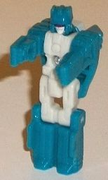
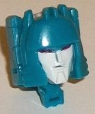
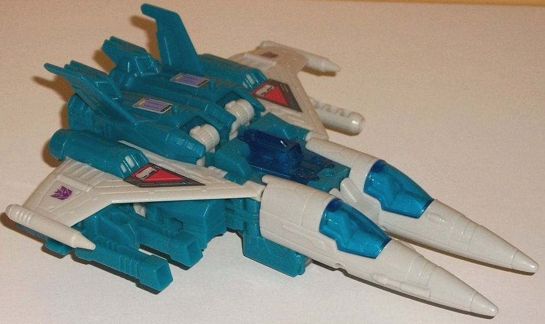
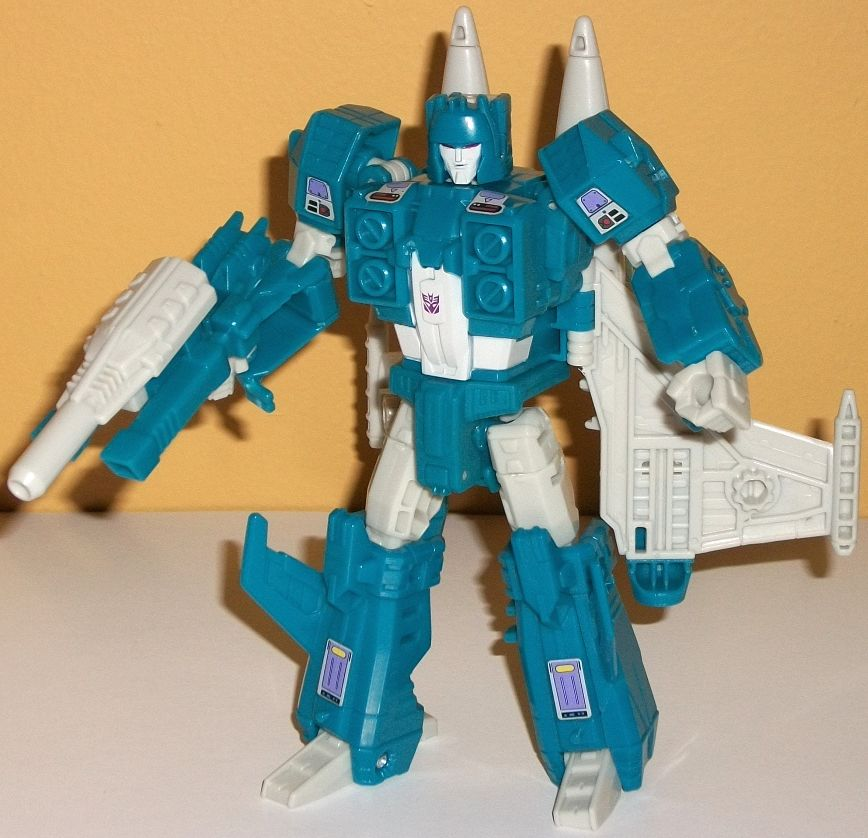

Allegiance
: Decepticon
Size
: Deluxe
Difficulty of Transformation
: Medium
Color Scheme
: Light gray, moderately
dark teal, and some transparent blue, dark red
Rating
: 9.2
(NOTE: Because this is a repaint, this is not a full-blown review. This mainly covers any changes made to the mold and the color scheme, and merely compares it to Titans Return Triggerhappy w/ Blowpipe. For a review on the mold itself, read the review of Titans Return Triggerhappy w/ Blowpipe here .)


Slugslinger is another
remold of Triggerhappy, so his Titan Master's robot mode is also the same
as Blowpipe's, at least in terms of the sculpt. Caliburst here has a light
gray main body and upper legs, while his head, arms, and lower legs are
a fairly dark teal. It's a pretty decent, but basic, color scheme. Compared
to most Titan Masters, Caliburst actually has paint on his robot mode--
though it's only on the head. His face is painted a light gray, while his
visor is a very dark red. As you'd expect, in head mode Caliburst has a
new facesculpt-- a modern update of G1 Slugslinger's, fairly accurate to
the source material. Slugslinger's head is fairly minimal in terms of mold
detailing, being fairly smooth with a couple of horizontal vents near the
lower sides, two small side antennae at the top of his head (which curves
inwards slightly at each side), and two small bits on the top of his forehead.
His face is fairly humanoid and nondescript, with your typical Decepticon
expression of narrowed, dark red eyes and a slightly sneering expression
on his light gray face. Although the facesculpt itself is pretty good,
it's hampered slightly by the Titan Master gimmick-- since the face narrows
at the top, the Titan Master's arms and knees poke out behind the face
a bit more obviously than they otherwise would have, which makes Slugslinger's
head look more square than the facesculpt shows he should have.


Slugslinger, like
Misfire
,
is another MASSIVE remold of Triggerhappy, though he does keep a few parts
from Misfire, too, which I'll get to in a minute. First, the jet mode--
just like his original version, Titans Return Slugslinger is a twin-nosed
jet with two cockpits. Unfortunately-- in, quite frankly, a really dumb
move-- the two cockpits are just for show; there's a little cockpit further
back in the actual body of the jet that holds the actual Titan Master.
Neither of the two more visible, obvious cockpits can open up, and they're
too small for Titan Masters. Given that the original Slugslinger was not
a Headmaster, if they couldn't have fit the Titan Master gimmick into Slugslinger's
vehicle mode they should have saved him for another line. Anyways, that
aside, the twin nosecones look pretty cool and certainly make Slugslinger
unique, both being rather long and skinny. Slugslinger has angular, fairly
large wings (at least when compared with the other versions of this mold),
and they're less futuristic than the other parts of him, lining up fairly
good with your average jet. The mold detailing on the end "gun cones" on
each wing looks good, and there's also thruster pieces on the top of each
wing. There's also one molded-in gun detail on the side of each nosecone,
and there's tiny little seats molded inside the closed twin cockpits. The
main color of Slugslinger in this mode is a light gray-- thankfully, not
that blah milky shade of the color, but a more solid version of the color
that looks much better on a jet. His other main color is a somewhat dark
teal-- mostly used on the body of the jet and thrusters in this mode. It
contrasts against the gray pretty nicely, though it's not exactly the greatest
color scheme in the world. The transparent blue on the three cockpits goes
with the gray very well, though it's a bit too close to the dark teal for
me. Slugslinger is surprisingly light on paint in this mode, though given
the plastic breakup it's not noticeable, for the most part. The paint that
IS used in this mode mimics some of his G1 sticker designs, like the red/dark
gray details in front of his thrusters and the purple/gray details on the
rear of his body section, which become his lower legs in robot mode. Slugslinger
has new weapons, as well-- he has a light gray single-barrel blaster, and
a teal double-barreled blaster that a Titan Master can sit in. Both can
be combined to form a triple-barreled blaster-- and the end result looks
pretty good and more "natural" than the "two gun halves combined into one"
that deluxe Titans Return figures often have for weapons.
When transforming Slugslinger
to robot mode, it becomes more obvious precisely what's remolded from Triggerhappy
and/or Misfire and what's not. As is apparent from the vehicle mode, the
entire legs are still kept the same when compared to both versions, and
although much is new-- basically the entire vehicle mode and robot mode
except for those legs-- a few cues are taken from Misfire. Slugslinger
shares the same slightly more basic transformation as Misfire, with the
same pieces on the sides of the shoulders that slide up the arms from the
sides of the body for the robot mode, and a few other minor connector pieces
like the inner waist piece on a hinge used solely for the transformation.
Unfortunately, like Misfire he also shares some back kibble in robot mode--
only more so because Slugslinger's wings are considerably larger. This
really is quite a big vehicle extra in robot mode, and I really wish these
wings folded up more and out of the way. Just like with Misfire, the cockpits
slide behind the upper back as well, though given that Slugslinger's cockpits
are-- again-- bigger, they make up a bigger backpack. Except for some minor
pieces like the elbows and fists, the arms are new, with simpler, more
angular details compared to Misfire, along with more decal-like paint apps
on the shoulders. The chest is also new, with Slugslinger's unique "four
NO symbols" molded on it and more purple decal-like paint on the top of
the chest. He's got some light gray paint on his abs and stomach, but otherwise
this mold has no new paint that isn't carried over from either the Titan
Master or the vehicle mode. The color scheme could've used this paint a
bit more, with the teal taking such a prominent spot in this mode compared
to the more broken-up vehicle mode, but it's still not that bad. Slugslinger
shares all the articulation that Misfire has.
Titans Return Slugslinger
is a welcome update for the fairly long-neglected character, and he has
an impressive amount of new parts despite being the third mass-release
version of the overall basic jet design. However, he has quite a lot of
back kibble in robot mode, not making his twin cockpits able to actually
hold Titan Masters was a bad move, and although G1-accurate, his color
scheme just doesn't look as good as on the other versions of this mold.
Still a great toy and recommended, but the weakest version of this design
overall.
Review by Beastbot